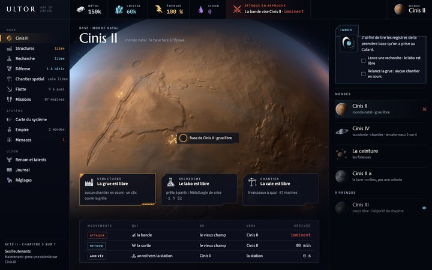

ULTOR · ASH OF EMPIRE · APERÇU NON ANNONCÉ
La version pleine page
Trois maquettes de ce que serait Ultor sur un écran d'ordinateur, à la manière d'OGame : le menu à gauche, les ressources en haut, le contenu dense au centre, le détail à droite. Tout y vient du jeu : les cadres et les icônes de ses packs, ses fontes, ses couleurs, et la 3D rendue par sa sonde sur une partie du milieu de l'Acte II.

Cinis II, l'accueilla planète au centre, les trois files, les mouvements, les mondes La Recherchela grille dense et le détail à côté
La Recherchela grille dense et le détail à côté
 La carte du systèmela carte à la taille de l'écran, la fiche à droite
La carte du systèmela carte à la taille de l'écran, la fiche à droite
Le jeu lui-même, tel qu'il tourne aujourd'hui dans un navigateur (portrait, centré) : l'aperçu web ; une partie avancée : au milieu de l'Acte II. Ces pages ne sont pas indexées.